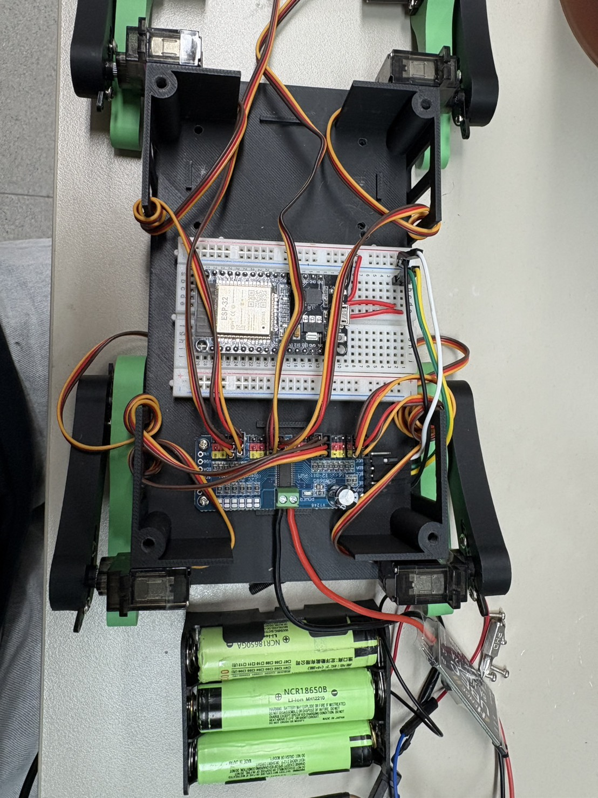
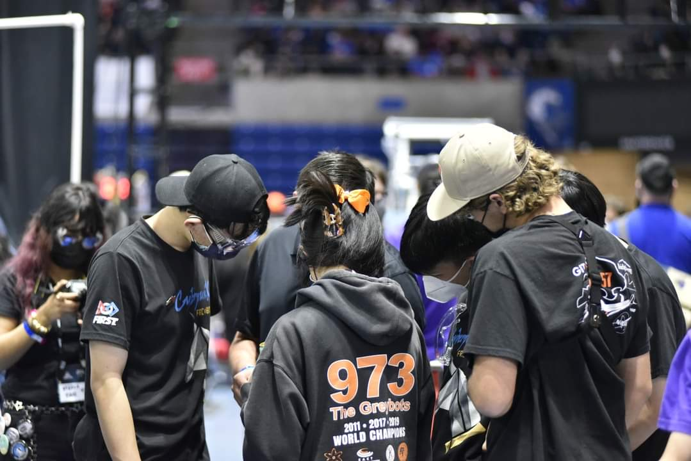
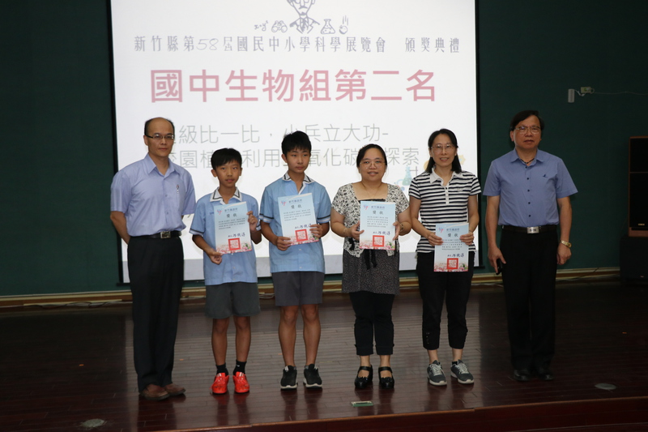

National Taiwan University · Mechanical Engineering
Cheng-Hsuan Lee
Mechanical engineering student focused on robotics, mechanism design, actuator control, prototyping, and experimental validation. I build systems from first principles, connect mechanical structure with embedded control, and lead teams through messy engineering problems until the final machine works.
Profile
Hands-on robotics, disciplined analysis, and calm team leadership.
My interest in mechanism design began with LEGO EV3 projects in elementary school and grew through science fairs, FRC robotics, and university-level mechanical engineering projects. At National Taiwan University, I have led teams in quadruped robot, quadcopter, and ball transfer mechanism projects, combining CAD, fabrication, electronics, programming, and testing into complete working prototypes.
I am especially drawn to projects where mechanical design decisions affect controls, manufacturability, reliability, and team workflow at the same time. Many of my strongest learning moments came from debugging unstable motion, redesigning weak structures, and turning incomplete information into practical test plans.
Featured Engineering Work
Projects built through design, fabrication, control, and testing.
Microprocessor Controlled Systems · Team Lead
Quadruped Robot Dog
Designed and fabricated a complete four-legged robot from scratch, including a 3D-printed body, replaceable leg modules, power layout, and servo-driven actuation. The control system used an ESP32 with a PCA9685 servo driver to coordinate eight MG90S motors, with gait logic first simulated in MATLAB and then implemented in Arduino.
The project required balancing weight reduction, structural stiffness, center-of-gravity placement, wiring serviceability, and motor torque limitations. The final robot performed walking, standing, sitting, waving, and rocking motions, and the course project received an A+.
Open project detail
Practice of Mechanical Engineering · Team Lead
Quadcopter Ball-Transfer Drone
Led the design and construction of a quadcopter system tasked with moving a ball from a low platform to a high platform. The work covered airframe design, electronics selection, power supply decisions, thrust-to-throttle testing, flight controller integration, SBUS debugging, resonance troubleshooting, and ball-carrying mechanism development.
To reduce final-test risk, our team built spare assemblies, studied the rules carefully, and prepared contingency strategies before the one-shot final evaluation. The drone became one of the most stable systems in the course and earned full marks in both midterm and final tests.
Open project detail
Machine Design Theory · Team Lead
Foldable Long-Distance Ball Transfer Mechanism
Led a team in developing a compact mechanism that could transfer a ball between platforms while staying within strict size constraints. Beyond basic pickup and release, the core engineering challenge was folding: the structure had to deploy smoothly, remain stiff after deployment, and survive repeated testing.
After early folding concepts proved unreliable, I adapted available door hinges and latch hardware into a practical folding module. Combined with 3D-printed parts and MDF structure, the final mechanism achieved stable operation and strong final evaluation performance.
Open project detail

CKHS Robotics Team · Programming and Strategy Lead
FIRST Robotics Competition
Served as programming team leader and strategy/scouting leader for the CKHS Robotics Team. I wrote autonomous-period behavior and selected teleop logic, supported early-season prototyping and mechanism development, and led the scouting team in building competition tools for match data collection and strategy.
I integrated scouting data with Excel-based analysis so our team could quickly evaluate thousands of match records, choose alliance partners, and make strategy decisions under match pressure. The team qualified for the Houston Championship and earned multiple engineering awards in Taiwan and the United States.
Open project detail
Research Direction
Legged robotics work in progress.
This section is reserved for upcoming laboratory work on quadruped robot leg motor gearbox design and fabrication, actuator packet communication, motor control, reinforcement learning training, and real-world testing. The current site keeps the structure ready so new results can be added without redesigning the portfolio later.
Competitions and Recognition
Engineering under real constraints and real deadlines.
FIRST Robotics Competition Awards
- 2022 Sacramento Regional · Finalists & Industrial Design Award
- 2022 New Taipei City x Hon Hai Regional · Engineering Inspiration Award
- 2022 Carver Championship Division · Houston Championship qualification
- 2023 Los Angeles Regional · Excellence in Engineering Award
- 2023 San Diego Regional · Excellence in Engineering Award
Additional Competitions
- 2nd ISS Kibo Robot Programming Challenge Taiwan Preliminaries · Merit Award
- 58th Hsinchu County Science Fair, Biology Division · Second Place

Capabilities
A mechanical engineer who can also code, test, and fabricate.
Mechanical Design and Fabrication
Machining, 3D printing, CNC, soldering, engineering drawing, mechanism design, prototyping, material selection, serviceability planning, and strength-weight tradeoffs.
Programming and Control
Python, C++, Arduino, MATLAB, Simulink, LabVIEW, Java, Dart, Excel VBA, embedded debugging, motion analysis, and practical control implementation.
CAD and Analysis Tools
Autodesk Inventor, Autodesk AutoCAD, SolidWorks, Tracker, MATLAB-based MCK system analysis, linkage calculations, and motion experiments.
Independent Projects
Built an online JavaScript system for a physical Monopoly board game, collaborated on a hexagon-based Minesweeper game, self-studied C++ and Python for APCS, and fabricated practical products with a personal 3D printer.
Education
Academic background and selected coursework.
Department of Mechanical Engineering, National Taiwan University
Coursework includes Microprocessor Controlled Systems, Automatic Control, Numerical Analysis, Practice of Mechanical Engineering, Mechanical Engineering Laboratory I/II, Engineering Materials, Dynamics, Fluid Mechanics, Thermodynamics, Heat Transfer, Mechanism, Machine Design Theory, Manufacturing Processes, and Applied Electronics.
Taipei Municipal Chien Kuo High School
Joined the robotics team, developed mechanical design and programming abilities, and participated in regional and international FRC competitions.
Downloads
Resume placeholder and full project report archive.
The resume slot is ready for a future PDF. Existing reports are linked from the current folder structure so reviewers can open the original documents directly.
Resume
Place the final resume PDF in this folder later and update this button to the file path.
Robot Dog
Microprocessor Final Written Report
PDF · 4.5 MB
Robot Dog
Midterm Progress Slides
PDF · large local file
Robot Dog
Final Presentation Slides
PDF · large local file
Drone
Practice of Mechanical Engineering Final Report
PDF · 5.8 MB
Drone
Thrust to Throttle Testing
PDF · 1.1 MB
Drone
Flight Controller, Motor Debugging, and SBUS
PDF · 0.5 MB
Drone
Dynamic Testing After Midterm
PDF · 0.3 MB
Drone
Personal Journal and Feedback I
PDF
Drone
Personal Journal and Feedback II
PDF
Drone
Personal Journal and Feedback III
PDF
Drone
Personal Journal and Feedback IV
PDF
Drone
Personal Journal and Feedback V
PDF
Drone
Project Meeting Worksheet I
PDF
Drone
Project Meeting Worksheet II
PDF · 20.1 MB
Drone
Project Meeting Worksheet III
PDF
Drone
Project Meeting Worksheet IV
PDF
Drone / Lab
Mechanical Engineering Experiment Report I
PDF · 19.7 MB
Drone / Lab
Mechanical Engineering Experiment Report II
PDF · 25.0 MB
Drone / Lab
Mechanical Engineering Experiment Report III
PDF · very large local file
Drone / Lab
Mechanical Engineering Experiment Report IV
PDF · very large local file
Ball Transfer Mechanism
Machine Design Theory Second Report
PDF · 8.2 MB
Ball Transfer Mechanism
Machine Design Theory Final Project
PDF · 2.2 MB
Numerical Analysis
Midterm Project
PDF · 2.1 MB
Numerical Analysis
Final Project
PDF · 1.9 MB
Refrigeration and Air Conditioning
Final Report
PDF · 0.4 MB
Refrigeration and Air Conditioning
High-Temperature Heat Pump Presentation
PDF · 8.9 MB
Mechanical Engineering Laboratory
Experiment Report 1
PDF
Mechanical Engineering Laboratory
Experiment Report 2
PDF
Mechanical Engineering Laboratory
Experiment Report 3
PDF
Mechanical Engineering Laboratory
Experiment Report 4
PDF
Mechanical Engineering Laboratory II
Experiment II Report 1
PDF
Mechanical Engineering Laboratory II
Experiment II Report 2
PDF
Mechanical Engineering Laboratory II
Experiment II Report 3
PDF
Mechanical Engineering Laboratory II
Experiment II Report 4
PDF
Contact